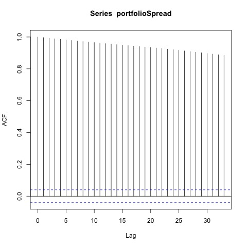
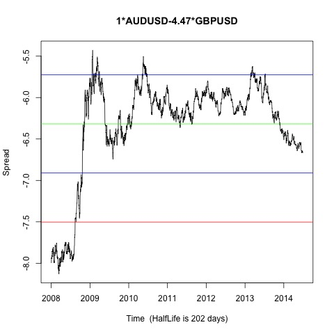
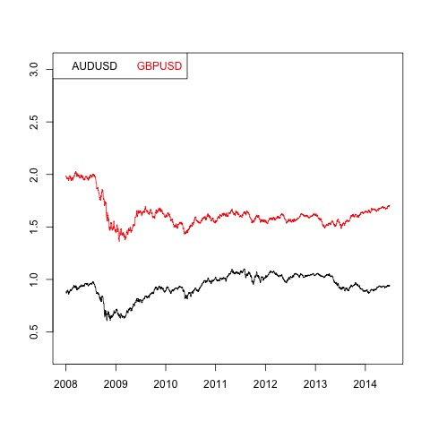

Johansen-Procedure "" "10pct" "5pct" "1pct" "r <= 1 |" 5.06 7.52 9.24 12.97 "r = 0 |" 18.11 17.85 19.96 24.6 "AUDUSD.l2" "GBPUSD.l2" "constant" "AUDUSD.l2" 1 1 1 "GBPUSD.l2" -4.47 0.08 -0.5 "constant" 6.17 -1.08 0.24
Augmented Dickey-Fuller Test p-value 0.613186748403873  